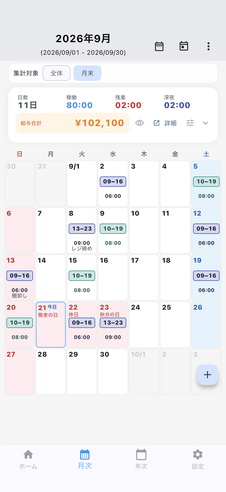

切り替え方
- 設定を開きます。
- アプリの基本設定を開きます。
- 「集計対象」で、締日ごとか勤務先ごとを選びます。
月次画面と年次画面の上部でも、集計対象を切り替えられます。勤務先が1件のときは、切り替えは出ません。
新しくインストールした場合の初期値は勤務先ごとです。アップデート前から使っている場合は、これまでどおり締日ごとのままです。
締日ごと
同じ締め日の勤務先を、ひとつにまとめて集計します。締め日が違う勤務先は、別のまとまりになります。
締め日は、勤務先の登録で設定します。設定 → 勤務先で、各勤務先の締め日を確認できます。
勤務先ごと
選んだ勤務先だけを集計します。期間は、その勤務先の締め日で区切ります。掛け持ちで、先ごとに今月の稼働と給与の目安を見たいときに使います。
一覧とカレンダーは、集計単位とは別です
月次の見た目は、一覧とカレンダーを切り替えられます。これは集計単位とは別の設定です。
- 設定 → アプリの基本設定 → 「月次の表示」で、一覧 / カレンダーを選びます。月次画面右上のメニューからも切り替えられます。
- カレンダーでは、各日に始業から終業の時間帯を出します。稼働時間への切り替えは「カレンダーの時間表示」です。
- 日本語では国民の祝日名を表示します。給与合計は目安です。
